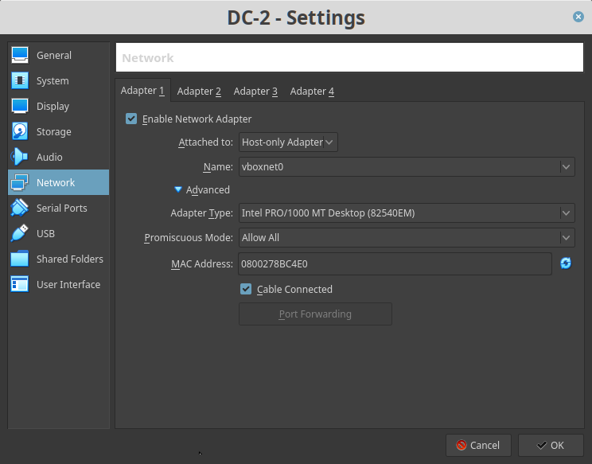
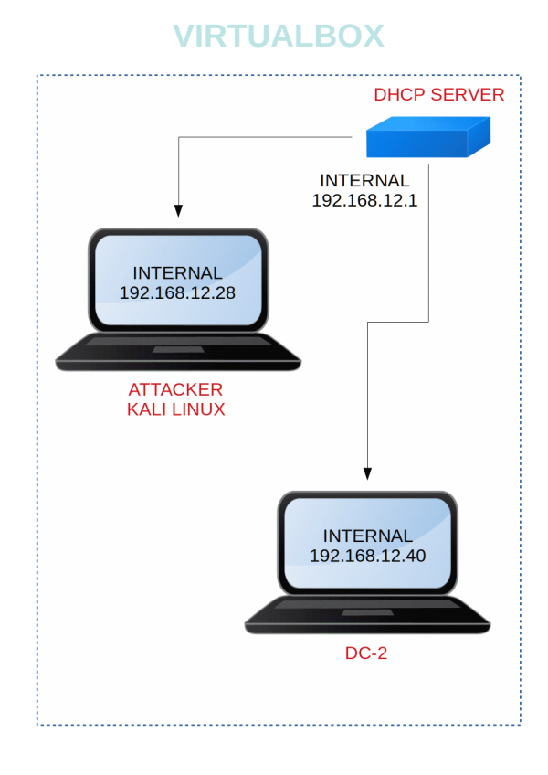

DC-2
▸ DC-2
▸ 1. Scan Network
▸ 2. Finding Services and Ports
▸ 3. Port 80
▸ 4. First flag
▸ 5. Generate password list
▸ 6. Wpscan
▸ 7. Login Wordpress (2nd flag)
▸ SSH (3rd flag)
▸ Escaping Restricted Linux Shells
▸ Change user (Four flag)
▸ Git (Fith flag)
Difficulty: Beginner.
Flag: 5 flags. There are five flags in total, but the ultimate goal is to find and read the flag in root's home directory. You don't even need to be root to do this, however, you will require root privileges.
Learning:
• Using nmap to find opened ports & running services.
• Using cewl tool to generate password list
• Enumerating wordpress using WPSCAN
• Perform full port scanning using nmap
• Escaping restricted shell
• Editing PATH environment variable
• Privilege escalation using git tool
Download (Mirror): http://www.five86.com/downloads/DC-2.zip
Install the machine on VirtualBox:
1. Download the file and extract it.
2. On Virtualbox choose File->Import Appliance.
3. Select the file “ova”.
4. Accept to import.


Watch your Machine IP.

Diagram
 Index
Index